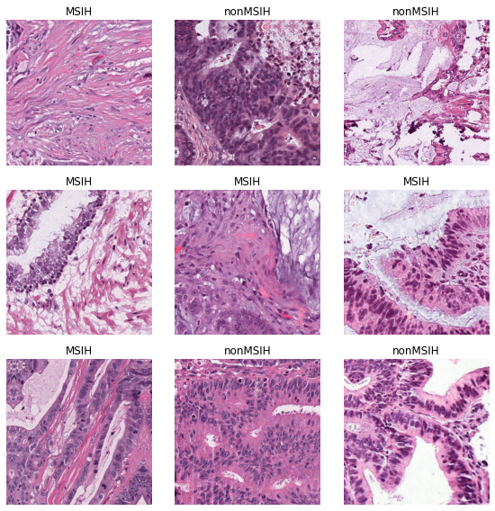
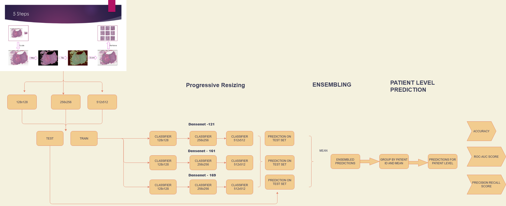
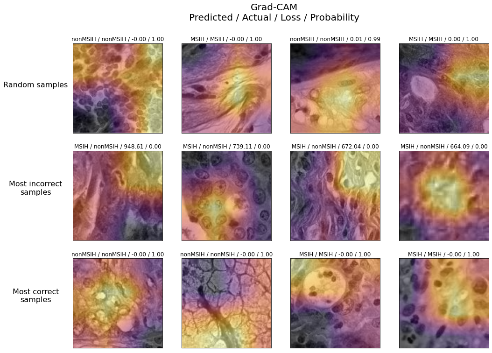
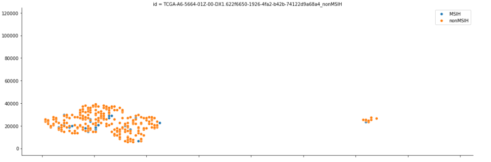
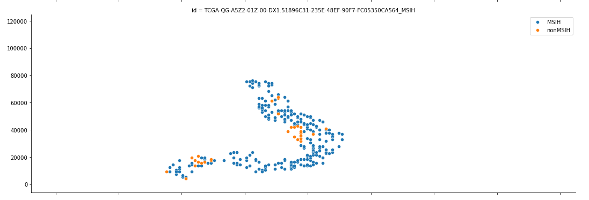
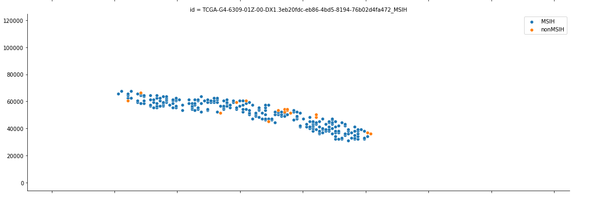

Machine learning has the potential to revolutionize the healthcare industry. Although it is still in its early stages, machine learning is proving to be extremely useful especially in the diagnostics department. Several machine learning models were capable of defeating Stanford University radiologists in a competition designed by the Stanford Machine Learning group within the last decade. It is only a matter of time before more complex problems, such as histopathology, see a machine learning model outperform a histopathologist.
This project was part of my research internship at Maastricht University, Netherlands. The task at hand is to develop deep learning vision models that would be capable of identifying mutations in colorectal cancer images. Detecting the mutation is critical in patient treatment because it involves a change in the drug course or, in some cases, a completely different form of treatment. Let's take a look at an example of a sample from the dataset. MSIH are tumour positives, while Non MSIH are tumour negatives. For the average human eye, they are virtually indistinguishable. histopathologist use a technique called Macenko method where they use a special dye that changes the cell to a gradient of colors based on their chemical composition. A more detailed explanation can be found in the project report attached to this page.
This is a binary image classification problem. So, let's use the sultan of computer vision, the CNN's. Convolutional neural networks are great at image recognition, but they have one major problem. Scale invariance. This is an even bigger problem in histopathological image recognition because, spatial coordinates are important. A single patient's imagery of a mutated cell will range somewhere from 1GB to 5GB with a spatial resolution of up to 4k pixels. It is infeasible to train with such a large image given the memory restrictions. So the approach would be to cut the single large image to smaller ones and annotate them according to their local mutation state. But what would be the best cut resolution? 256x256? 512x512? This project explores the idea of progressive resizing, where instead of using one size, one can use multiple size in increasing order until it is not possible to fit in the memory anymore. progressive resizing is where a CNN model is trained on the lowest image size, then the weights of this model can be used to train the next image size and so on until the final size. This is sort of a peseudo transfer learning. The advantages here are
- It can overcome the scale invariance up to a degree.
- Still able to leverage large scale weight database like ImagNet and popular CNN architectures like ResNet or DenseNet
- Training is much faster and memory efficient than training on the largest possible scale.
- The performance is much better as we will see.
The below image is a outlay of the pipeline used in this project. After experimenting with several architectures like ResNet, InceptionV3 etc.. DenseNet proved to be the best performing one. The inference to note here is that, the features of this dataset are particularly hard to learn and relatively shallow networks like ResNet suffers from vanishing gradients as the depth is increased in ranges of 50,101,121 etc.. But denseNet is immune to this as it is designed by making the gradients flow from any layer close to the loss function to any earlier layers, hence the resulting good performance. 
Lets take a look at the results. AUC metrics were used as the final measure of the predictions as the normal acccuracy is not viable since the dataset is quite imbalanced with positive cases being very and artifically upsampled. AUC give the true accuracy in this case. The results shown are the ensembled final model with AUC of 0.96 for the smaller images. Remember the training images are not the full scale image. They have to converted back to their original size. To get the predictions for the patient level, all the prediction probabilites of the smaller images were averaged. The final results were, 129 patients predicted correctly, and 15 wrongly. Although not acceptable at a commercial scale, still very good results from a research standpoint.
Now lets viualize some intersting findings from our best performing model. One of the visualization I find interesting is the class activation mapping. It can highlight the features of the image the model looks at to make a prediction. In our case, it is even better because it exactly points out which region in the spatial coordinates of the tumor, the mutation has occcured. What I inferred from this image is that the concentric circles are somewhow correlated. I cannot confirm as I am not an expert in histopathology but someone whos is might be able to. 
Now lets try to plot the region of mutation occurence in the patient level image. I wanted to see if there are any patterns in the occurence of the mutation by plotting the images based on their original coordinates before cut, and classifying based on the result. However, there were no underlying patterns present here, maybe a larger sample size and a clustering algorithm like KNN's might be able to identify the possible patterns.   
You have reached the end. This is a gist of my analysis on this problem Hope you had a good time. If you are further interested in this work, please refer the full jupyter notebook at link